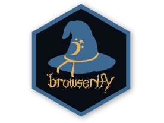
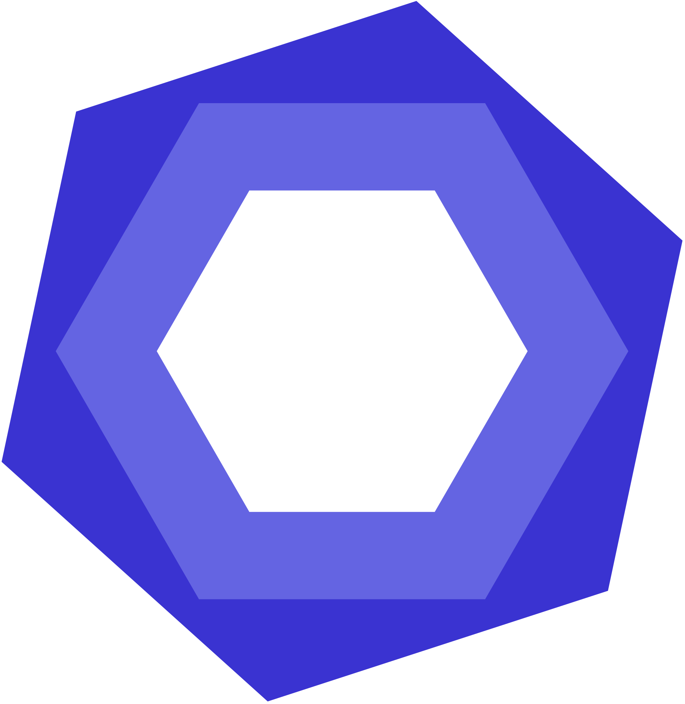
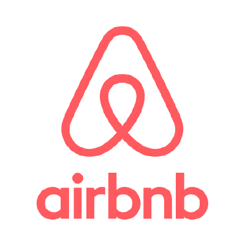
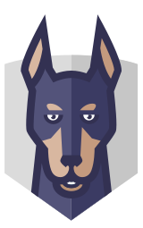
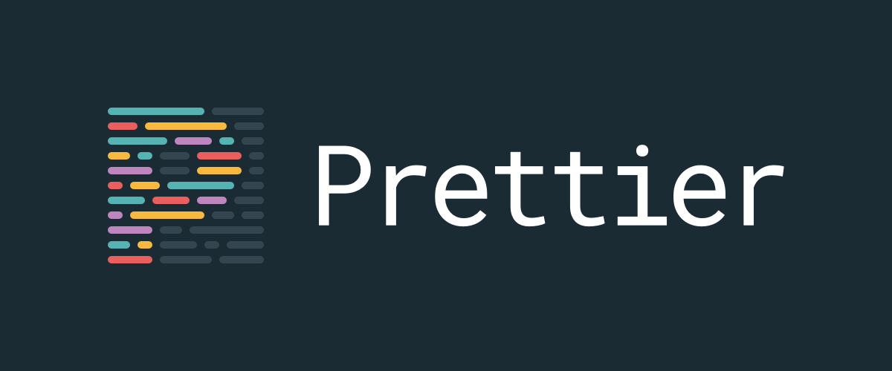
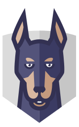
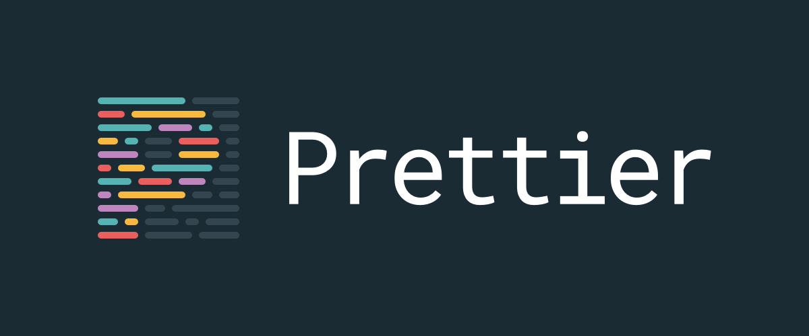

## 質の高い JavaScript UI 開発
有限会社アップルップル 堀 悟大
## 普段は a-blog cmsの開発などを担当
- ユーザーがより使いやすいUIを追求
## a-blog cms
- カスタムフィールドメーカー
- テーブルユニット
- テキストユニット
- ナビゲーションモジュール
## Submodule開発
LiteEditor や a-table など a-blog cms で使うUIを別のgitレポジトリとして開発して、
a-blog cmsではsubmoduleとしてそれを読み込んで使っている。
## Submodule開発
- 一つの機能を集中して開発できる。
- 依存関係の少ないモジュールを開発できる。
## なるべく、ひとりで完結しない
- UIをひとりで考えずにデザイナーと相談
- APIや仕様などをプログラマと相談
## すでに配布されているUIをさがす
- 配布されているコンポーネントはスタイルが付いている
- 機能が制限されている
## すでに配布されているUIをさがす
探すのであればHOCライブラリがいい！
## 経験上、結局自分でコンポーネントを開発するのがいい場合が多い！
- 素晴らしいUIライブラリを作るのに複雑なロジックは不要
- 何度も触ってみて、ひたすらUI改善を繰り返す
- ツールを使ってソースコードの質を高める
- Readmeを充実させてそれらしいライブラリにする
## 他のライブラリに対する違和感
他のライブラリを使ってみて違和感を感じたら
開発スタート
## UI
- みんなが知っているような既存のサービスのUIを真似る
（Word Excellなど）
## 他のJavaScript と連携しやすい API
```js
new LiteEditor('#editor', {
//option
});
```
僕の場合、JavaScriptライブラリはクラスとして提供し、その第一引数をセレクター、第二引数をオプションで統一している
## ECMA Script6で開発
jQueryから完全に独立させBrowserifyやWebpackの恩恵を受けて開発

## ESLintを利用して品質保証
ルールの厳しいAirbnbを使用！

## E2Eテスト
UIライブラリなので、ユニットテストだけではなく、E2Eテストをしっかりかく
 mocha + Nightmare.js
## E2Eテスト
最近はReactで書くことも多いので、
Jest + react-test-renderer の組み合わせも試している
## 見た目や挙動の視覚的テスト
Storybook
## Valunerabillityチェック

https://snyk.io/
## Prettierをつかったコード整形

## GitHubに公開
使ってくれたユーザーからのフィードバックを得られる
## GitHubに公開
ドキュメントの公開には gh-pages を利用
## npmに公開
mocha + Nightmare.js
## E2Eテスト
最近はReactで書くことも多いので、
Jest + react-test-renderer の組み合わせも試している
## 見た目や挙動の視覚的テスト
Storybook
## Valunerabillityチェック

https://snyk.io/
## Prettierをつかったコード整形

## GitHubに公開
使ってくれたユーザーからのフィードバックを得られる
## GitHubに公開
ドキュメントの公開には gh-pages を利用
## npmに公開
npm installすれば使えるようにしておくことで、そのライブラリを使用する際の手間を削減
スタンドアロンでも使えるようにbuildを分けておく
 ### ツールやサービスなどを駆使して、UIを開発するためのモチベーション維持
### ツールやサービスなどを駆使して、UIを開発するためのモチベーション維持